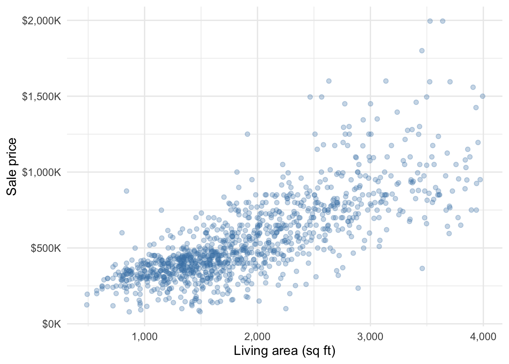
13 Visualizing and Summarizing Two Quantitative Variables
Up to now you’ve seen probability for multiple categorical variables; in this section we extend those ideas to quantitative variables, including those modeled as continuous random variables. The joint and conditional distributions from Chapter 10 and independence from Chapter 12 have natural analogues for continuous random variables. Their formulas involve more complicated mathematics, so here we focus primarily on visual descriptions and building intuition. We follow the trajectory of Chapter 10: describing the observed joint distribution of two variables in data, and then introducing related probability concepts. We begin with the scatterplot.
13.1 Scatterplots
A scatterplot puts one variable on each axis and draws a point for every observation. Figure 13.1 plots 1,103 Austin home sales from three ZIP codes (78721, 78723, and 78731), the same homes whose ages we plotted in Chapter 2, with living area on the x-axis and sale price on the y-axis.
A scatterplot gives us a quick visual description of how the two variables tend to move together. Here we see a positive relationship — larger houses tend to sell for more — that is close to linear. A straight line describes the broad pattern reasonably well. We see some evidence that the variability in prices is larger for bigger houses — the range of prices for houses around 1,000 sqft is narrower than the range of prices for houses around 3,000 sqft, for example.
When the sample size is large a scatterplot can turn into an unreadable blob. Even when the sample size is small, if one or both variables have many ties it can be difficult to read the scatterplot. For example, the CPS data from Chapter 2 has both problems. The sample size is large (44,690 workers) and one of the key variables — years of education, educ_years — takes only a handful of distinct values. A naive scatterplot (Figure 13.2, left panel) piles tens of thousands of workers onto a few vertical lines.
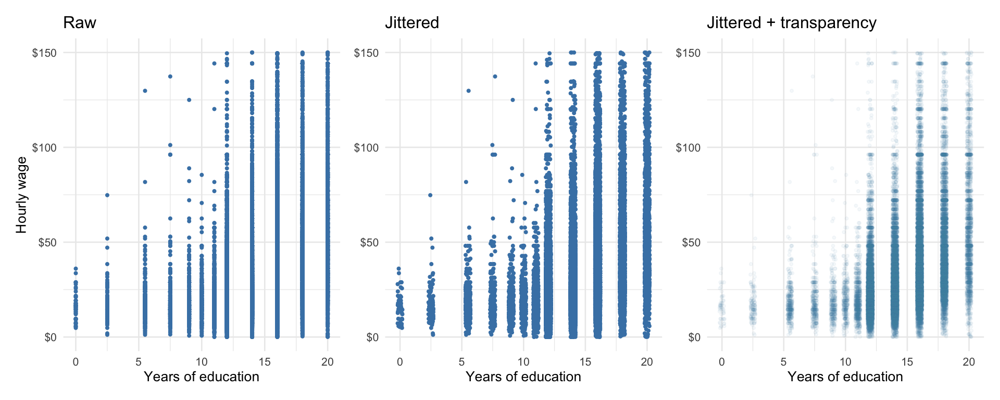
To fix the ties we can apply jitter, which adds a little random horizontal shake to the reported years of education so identical x-values spread apart (Figure 13.2, middle panel). Even then we see wider but mostly dark strips. The right panel of Figure 13.2 adds transparency, so densely-packed areas appear darker than less-dense areas. (Figure 13.1 also uses a little transparency if you look closely.)
Another viable option is to treat years of education as an ordinal categorical variable when we create our plots. Either approach works; the best option depends on the purpose of the visualization and the audience.
Wages tend to increase with years of education. The spread of wages seems to increase with education as well.
Exercise 13.1: Delivery routes
The plot shows synthetic data for 60 delivery routes. Each point pairs a route’s distance with its delivery time. Describe how delivery time changes with distance. Is the spread of times for routes near 10 miles about the same as for routes near 40 miles?
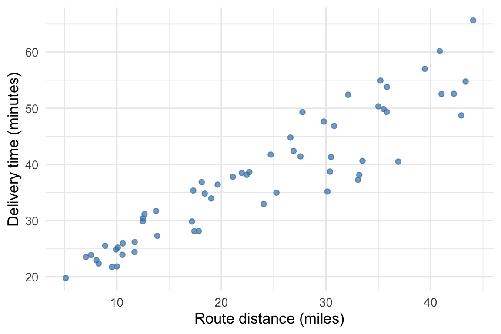
Solution
Delivery time tends to increase with distance. The vertical spread is wider near 40 miles than near 10 miles. Delivery times vary more around the upward trend at longer distances.
13.2 Smooth curves
Electricity demand is high on both hot and cold days, when households and businesses use more cooling or heating. The ERCOT data below pair daily average electricity demand with daily average temperature in the Dallas–Fort Worth region from 2016 through 2020. Each point represents one day. To help visualize the trend in load (\(Y\)) as the temperature (\(X\)) increases, we can add a smoother, a curve that passes through the “middle” of the observed loads at nearby temperatures. This can be a useful visual guide, especially when the sample size is large and the data exhibit a lot of variability. Here are the ERCOT data with a smoother overlaid:

As expected the curve bends upward at both ends: demand is lower on mild days and higher at temperature extremes.
Tip 13.1: Reading a conditional average
You can think about the curve as representing the average load across all days where the temperature takes a specific value. For example, the curve passes through about 12,000 MW at 50°F. That is, according to the smooth summary, if we observe load on many 50°F days, the average load would be about 12,000 MW. The spread of the points around the curve near 50°F depicts how difficult it is to predict load for an individual 50°F day. These are conditional location and spread: given that it is 50°F outside, what is our best guess for load, and how wrong are we likely to be?
Technical detail 13.1: Constructing a smooth curve
The curve above uses a moving temperature window. Within each window we fit a straight line to demand and temperature, then use its height at the window’s center as one point on the curve. Moving the window and connecting those heights produces the curve. A wider window averages over more of the data; a narrower window follows local variation more closely.
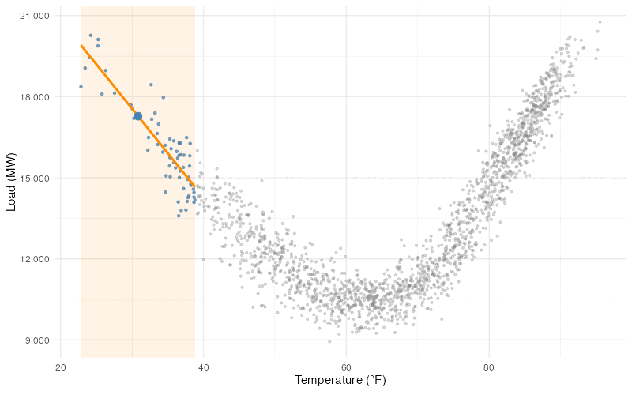
The Austin housing data have more scatter around their trend. Below are the same homes with a smooth curve estimating average price from nearby homes.
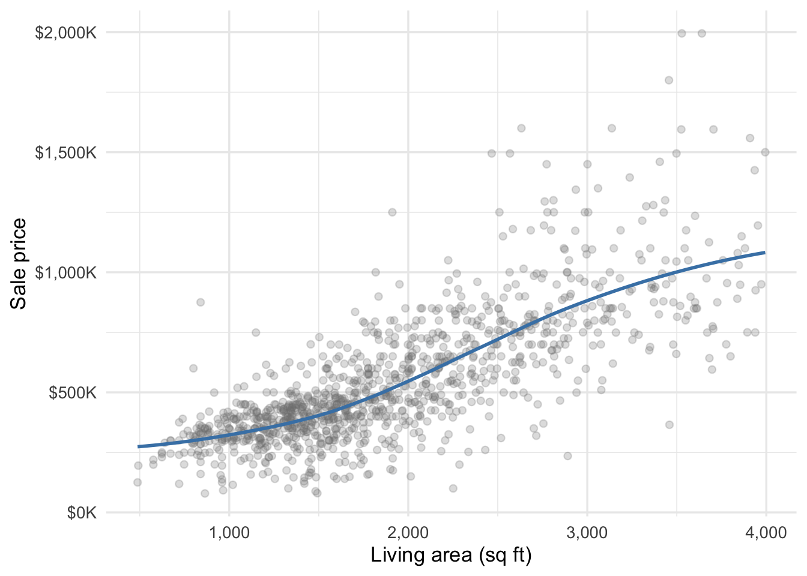
WarningSmall bends in a smoother
The curve bends gently, but small bends need not reflect a stable relationship in the population. We should be particularly cautious among the larger homes, where fewer observations determine the curve. A smoother can help us see a relationship without requiring it to be linear; it will generally not be perfectly straight even when the underlying relationship is linear.
Exercise 13.2: A prediction for one day
A planner reads the smooth curve in Figure 13.4 at 50°F and says, “On a 50°F day, electricity demand will be 12,000 MW.” How would you revise this statement? What part of the plot helps you judge how far an individual day’s demand might be from that value?
Solution
The curve estimates average demand on days near 50°F at about 12,000 MW. Individual days can have higher or lower demand. The vertical spread of the points near 50°F shows the variation around that average.
13.3 Linear Relationships and Correlation
The Austin scatterplot has a roughly straight upward pattern; the ERCOT plot has a pronounced curve. What is a linear relationship? We will make it precise in later chapters, but the idea is simple: the relationship is linear if the smooth curve we would draw through the middle of the points would be a straight line.
For example, the weekly asset returns introduced in Chapter 2 include Tesla and the S&P 500 market index. The scatterplot below pairs their returns for 104 weeks, from October 2023 through September 2025. Each point represents one week.
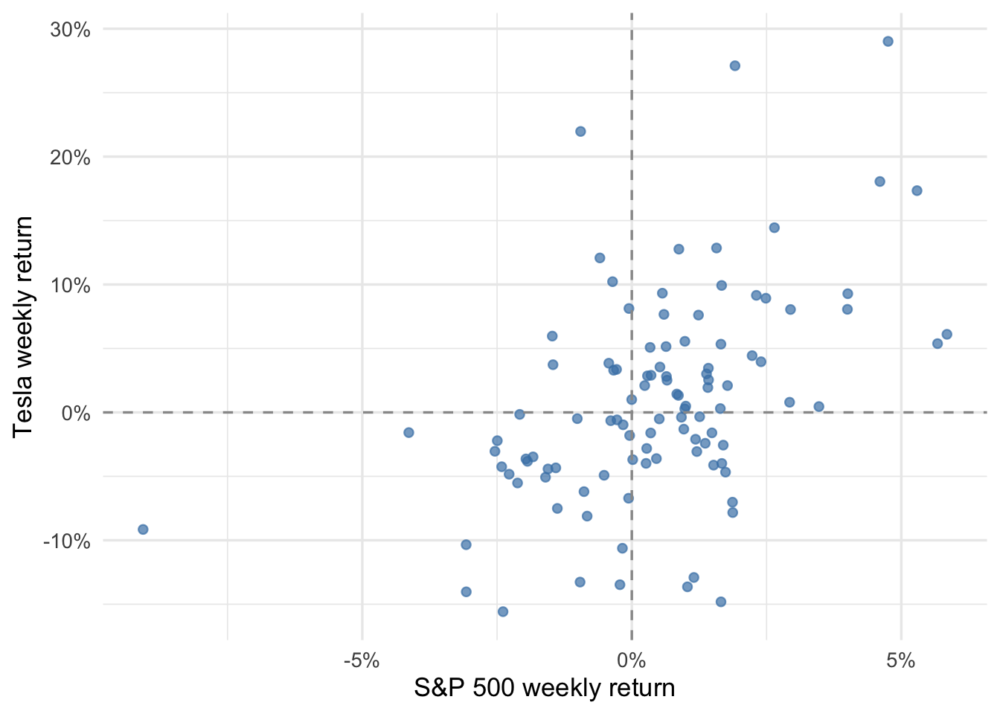
When is a relationship nonlinear? When it cannot be described well by a straight line; the ERCOT data above are a classic example of a nonlinear relationship.
Correlation summarizes the direction and strength of a linear relationship. It is useful as a one-number summary of how two variables tend to move together, provided they have a linear relationship. It is also useful because, together with their standard deviations, it tells us what happens to the spread when we create a linear combination of two variables, like when we build an investment portfolio or turn forecasted revenue and costs into profit, even if the original random variables have a nonlinear relationship. We will come back to this in Chapter 14.
Definition 13.1: Correlation
The sample correlation, written \(r\), ranges from \(-1\) to \(1\).
- Positive correlation describes an upward linear association; negative correlation describes a downward linear association.
- A correlation of \(1\) or \(-1\) means all points lie on a straight line, sloping upward or downward respectively.
- Values nearer \(1\) or \(-1\) indicate stronger linear association. A correlation of zero means no linear association.
Correlation has no units. Changing square feet to square meters, for example, does not change the correlation between house size and price. Both variables must vary for their correlation to be defined.
The simulated scatterplots below show different strengths and directions of linear association. Each panel contains 500 observations from a probability model with the labelled population correlation.
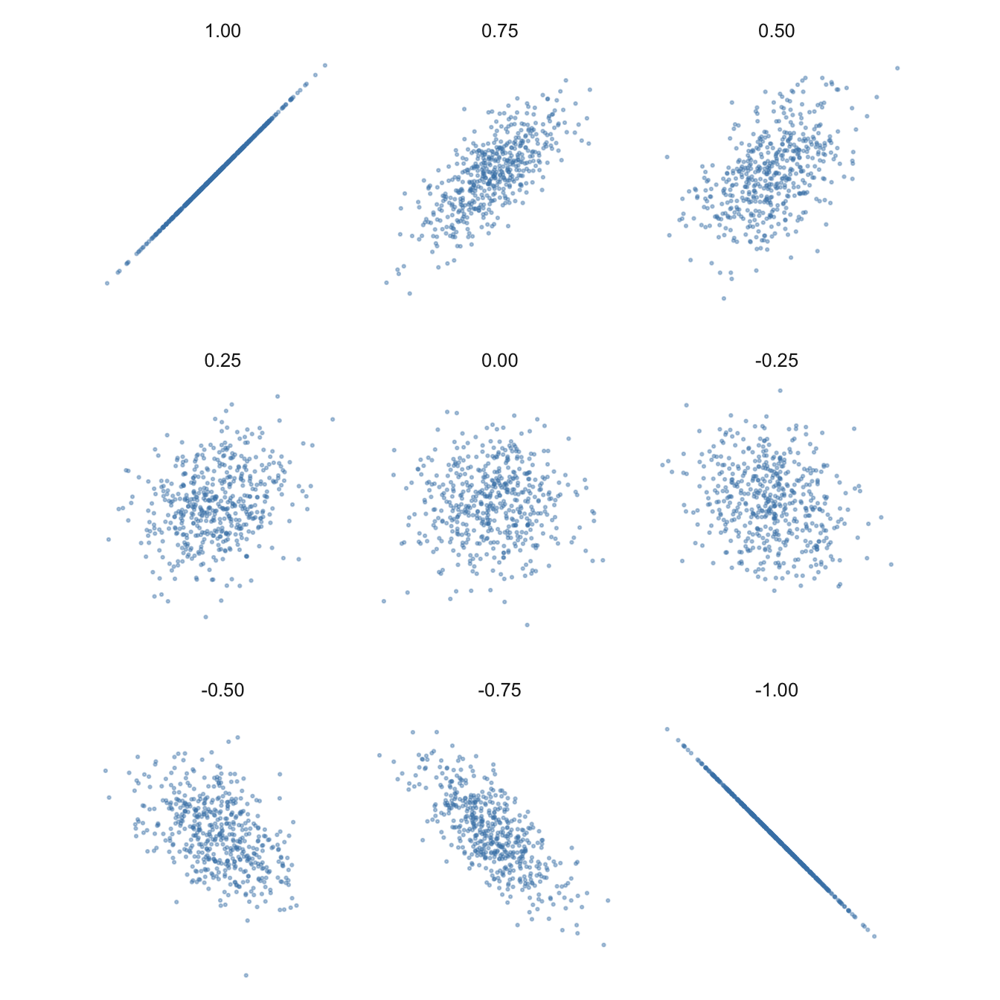
For the Austin homes, the correlation between size and price is \(r=0.77\). The positive value agrees with the upward pattern in the scatterplot, while the departures from a perfect straight line leave the correlation below 1.
Exercise 13.3: Comparing two depots
The two panels show synthetic data for 80 deliveries at each of two depots. Both panels use the same axis scales and show a similar upward trend in delivery time with distance. Which depot has the larger correlation between distance and time? Explain why the shared trend does not imply equal correlations.
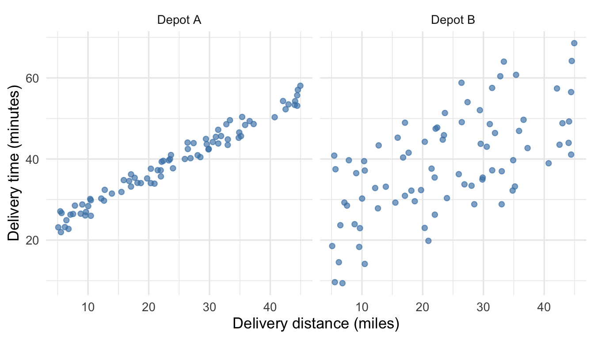
Solution
Both correlations are positive, but Depot A has the larger correlation because its points fall closer to a straight line. At Depot B, delivery times vary more at each distance. Correlation describes how closely the points follow the linear trend, as well as its direction.
13.4 Correlation and non-linear relationships
Correlation can miss nonlinear relationships, and it is also sensitive to outliers and other extreme observations. Anscombe’s quartet is a set of four famous datasets that have the same correlation, \(r=0.82\), despite displaying very different patterns:
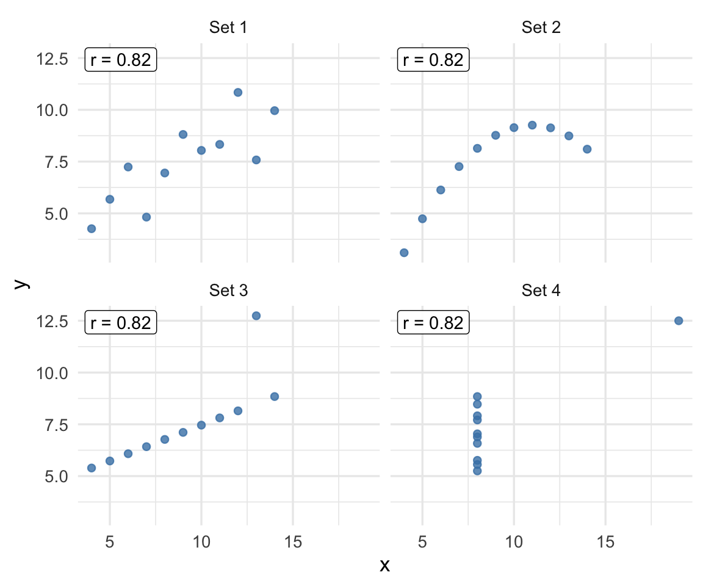
The upper-left panel has a roughly linear pattern. The upper-right panel has a curve that the correlation does not describe. In the lower-left panel, one point departs from the straight pattern followed by the others. In the lower-right panel, one observation accounts for the positive correlation; the remaining observations all have the same \(x\) value.
13.4.1 Nonlinear relationships
Would knowing the market return help us predict Tesla’s return more than knowing the temperature helps us predict electricity demand? Compare the scatter around each trend with the overall range of its y-variable.
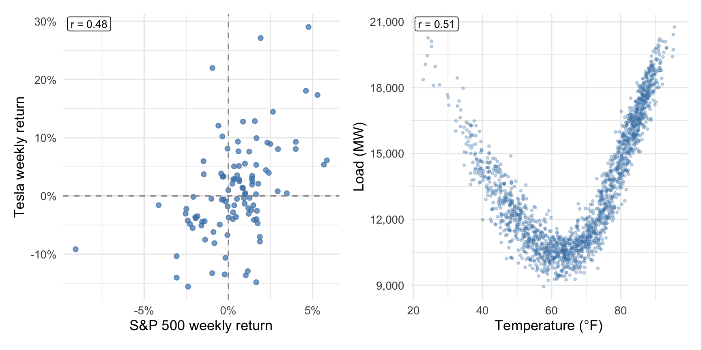
Demand follows its curved trend much more closely than Tesla returns follow their upward trend, relative to the overall variation in each outcome. In these data, temperature tells us more about demand than market returns tell us about Tesla returns. Yet the correlations are similar: 0.48 for Tesla and the market, and 0.51 for demand and temperature. Correlation does not describe the increase in demand at both temperature extremes.
13.4.2 Extreme observations
A distant point can change correlation substantially, as the lower two Anscombe panels show. We should check whether such an observation is a data error or a valid but unusual case. A valid observation can still make one summary an incomplete description of the rest of the data.
An extreme observation need not have a large effect. In the Tesla–S&P 500 data, the market’s worst week ended on April 04, 2025: the S&P 500 returned -9.1% and Tesla returned -9.2%. Removing that week changes the correlation from 0.48467 to 0.48470 — almost no change. The positive association in this scatterplot does not depend on the market’s worst week.
WarningLimits of correlation
Correlation summarizes linear association. A correlation near zero can occur even when a strong nonlinear relationship is present, and a few extreme observations can change the value substantially. Even an exactly zero correlation does not establish independence: independence requires the entire conditional distribution to stay unchanged, as in Chapter 12. Inspect the scatterplot alongside the correlation, because the number alone cannot tell us whether either of these problems is present.
Exercise 13.4: One large campaign
The plot shows synthetic advertising spending and sales for 41 campaigns. The orange point represents a national campaign; the other campaigns ran in individual cities. The company reports the correlation using all 41 campaigns as evidence that spending closely predicts sales for its city campaigns.
How do you expect the correlation to change if we leave out the national campaign? Does the company’s conclusion describe the city campaigns well? Explain using the plot.
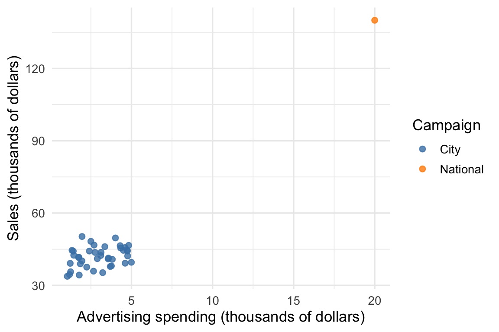
Solution
The correlation falls from 0.91 to 0.35. The national campaign has much higher spending and sales than all the city campaigns, making the overall association look strong. Among the city campaigns, sales vary considerably at similar spending levels. The correlation across all 41 campaigns overstates how closely spending and sales track each other among the city campaigns.
13.5 Covariance
Covariance also describes how two variables vary together, but retains their measurement scales. For house size and price, its units are square feet times dollars. Changing either unit changes the covariance, even though the underlying relationship stays the same.
Definition 13.2: Covariance
The sample covariance, written \(s_{xy}\), is positive when the variables have positive linear association and negative when they have negative linear association. It is related to correlation by
\[ s_{xy}=r\,s_xs_y. \]
The covariance combines the correlation with the standard deviations of the two variables. Unlike correlation, its magnitude depends on their scales and is not restricted to the interval from \(-1\) to \(1\).
For the Austin homes, the covariance between size and price is 158,246,850 square-foot-dollars. The positive sign agrees with the positive correlation; the number’s magnitude depends on the units in which we recorded both variables.
Technical detail 13.2: Products of deviations
For paired observations \((x_i,y_i)\), the sample covariance is
\[ s_{xy}=\frac{1}{n-1}\sum_{i=1}^n(x_i-\bar{x})(y_i-\bar{y}). \]
It summarizes products of the deviations from the two sample means.
For each observation, ask whether \(x\) and \(y\) are on the same side of their respective averages, and how far. When a bigger-than-average house also has a bigger-than-average price, both deviations are positive and the product is positive; when both are below average, two negatives again multiply to a positive. Points that are above average on one variable and below on the other contribute negative products, and the covariance averages these products across all observations.
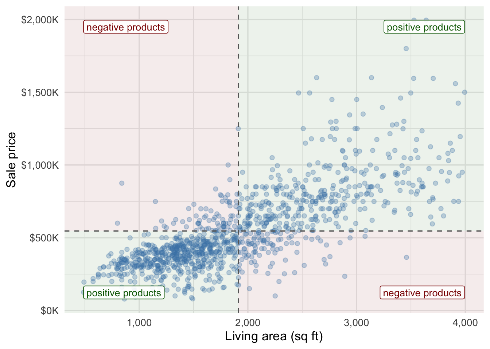
The figure below shades a rectangle for two example homes, each with area \(|(x_i-\bar x)(y_i-\bar y)|\), with color indicating whether the product contributes positively or negatively to the covariance.

Dividing by both sample standard deviations gives the correlation:
\[ r=\frac{s_{xy}}{s_xs_y}=s_{z_xz_y}, \qquad z_{x,i}=\frac{x_i-\bar{x}}{s_x},\quad z_{y,i}=\frac{y_i-\bar{y}}{s_y}. \]
Here \(z_{x,i}\) and \(z_{y,i}\) are the two z-scores for observation \(i\), and \(s_{z_xz_y}\) is the sample covariance of the two columns of z-scores. Standardizing both variables removes their original units.
Exercise 13.5: Changing price units
Suppose we convert every Austin price from dollars to thousands of dollars. What happens to the standard deviation of price, the covariance between price and size, and the correlation between price and size?
Solution
The standard deviation of price and the covariance between price and size each become one-thousandth as large. The correlation between price and size stays the same.
13.6 Covariance and correlation in probability models
Covariance and correlation are also defined for pairs of quantitative random variables. As with expected value and variance, we replace averages computed from data with probability-weighted averages. Their signs, units, and behavior under changes of scale are the same as for covariance and correlation computed from two columns in a dataset.
Definition 13.3: Covariance of random variables
For random variables with finite variances and means \(\mu_X\) and \(\mu_Y\),
\[ \operatorname{Cov}(X,Y)=E[(X-\mu_X)(Y-\mu_Y)]. \]
The covariance is the probability-weighted average of the product of the two deviations. Its sign describes the direction of linear association, and its units are the units of \(X\) times those of \(Y\).
Definition 13.4: Correlation of random variables
When both standard deviations are positive, the correlation is
\[ \operatorname{Corr}(X,Y)= \frac{\operatorname{Cov}(X,Y)}{\operatorname{SD}(X)\operatorname{SD}(Y)}. \]
It gives the same unitless measure of linear association for a probability model that \(r\) gives for data. Equivalently,
\[ \operatorname{Cov}(X,Y)=\operatorname{Corr}(X,Y) \operatorname{SD}(X)\operatorname{SD}(Y). \]
The model’s correlation and its two standard deviations together determine its covariance.
Exercise 13.6: Comparing sales across stores
A retailer models weekly sales at three stores, measured in thousands of dollars. The standard deviations of sales are 4 at Store A, 6 at Store B, and 12 at Store C. The correlation between sales at A and B is 0.8; between A and C it is 0.4.
Calculate the covariance between sales at A and B and between sales at A and C. Which pair has the stronger linear association? Explain why the covariances alone do not answer that question.
Solution
Both covariances are 19.2 in squared thousands of dollars: \(0.8(4)(6)=19.2\) for A and B, and \(0.4(4)(12)=19.2\) for A and C. Sales at A and B have the stronger linear association, with correlation 0.8 rather than 0.4. The larger standard deviation at C produces the same covariance despite the weaker correlation.
In the July 9, 2026 FedWatch model from Chapter 12, \(X\) and \(Y\) are the midpoints of the target ranges after the July and September meetings. The table below shows their possible pairs and probabilities. The midpoints use percentage points: 3.625 is the midpoint of the 3.50–3.75% range.
| July midpoint | September midpoint | Probability |
|---|---|---|
| 3.625 | 3.625 | 0.3765 |
| 3.625 | 3.875 | 0.3776 |
| 3.875 | 3.875 | 0.1228 |
| 3.875 | 4.125 | 0.1231 |
The correlation is 0.65, a positive linear association between the two meeting outcomes. Its covariance is 0.0116 squared percentage points. These summaries describe this probability model, rather than a historical sample of meeting outcomes.
Technical detail 13.3: Computing a model covariance
For a discrete model, multiply each pair’s probability by its product of deviations and sum:
\[ \operatorname{Cov}(X,Y)=\sum_{x,y}\Pr(X=x,Y=y)(x-\mu_X)(y-\mu_Y). \]
The FedWatch calculation uses the means and probabilities from the joint model above. The contribution table gives the signs and sizes of the terms.
| July midpoint | September midpoint | Contribution |
|---|---|---|
| 3.625 | 3.625 | 0.00432 |
| 3.625 | 3.875 | -0.00147 |
| 3.875 | 3.875 | 0.00147 |
| 3.875 | 4.125 | 0.00727 |
Independent random variables with finite, positive variances have zero covariance and zero correlation. The converse fails: zero correlation does not rule out nonlinear dependence.
Technical detail 13.4: Independence and covariance
Under independence, the expectation of the product factors:
\[ E[(X-\mu_X)(Y-\mu_Y)] =E[X-\mu_X]E[Y-\mu_Y]=0. \]
Each expected deviation is zero, so the covariance is zero.
Exercise 13.7: Temperature and measurement error
The plot shows synthetic operating temperatures and measurement errors for a sensor. An error of zero means the sensor reads correctly; positive and negative errors mean it reads too high or too low.
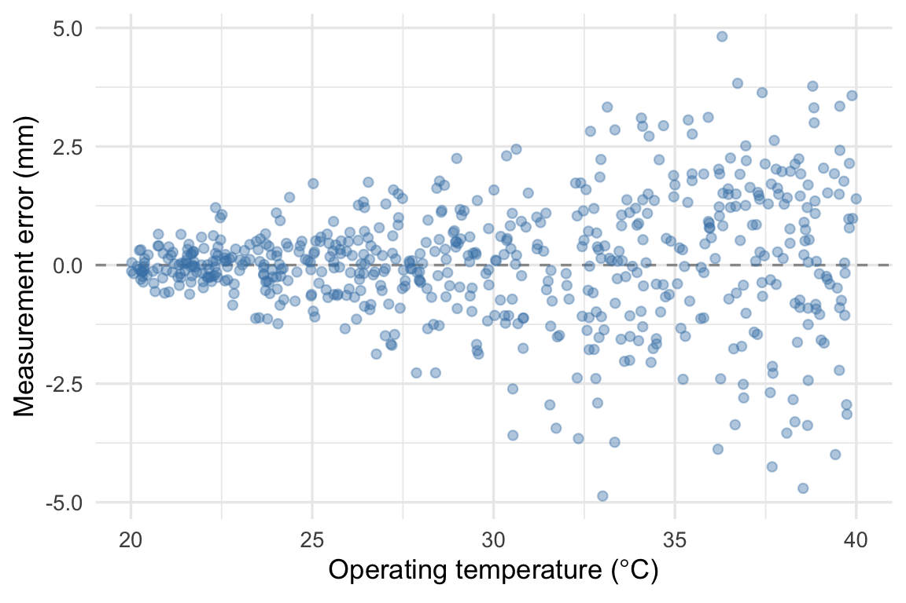
The sample correlation is 0.07, and the errors average close to zero throughout the temperature range. An engineer concludes that measurement error is independent of temperature. Does the plot support that conclusion? If the sensor must measure within 1 mm of the correct value, would you be equally comfortable using it near 20°C and near 40°C?
Solution
The errors spread farther from zero at higher temperatures, even though their average stays near zero. The conditional distribution of error changes with temperature, so the plot contradicts independence. Errors near 20°C mostly fall within 1 mm of zero; many errors near 40°C exceed that tolerance. The sensor is more precise at the lower temperatures.
Data used in this section
- Austin House Listings
- CPS ASEC Earnings
- ERCOT Hourly Load and Temperature Panel
- Weekly Asset Returns (2023–2025)
- CME FedWatch, July 9, 2026; the joint model follows the construction used in Chapter 12.